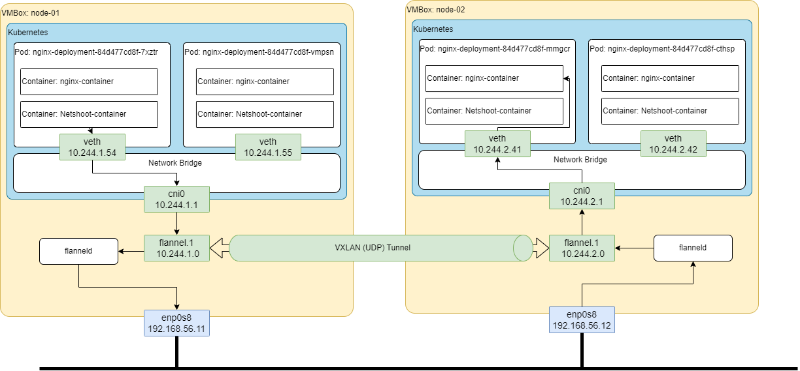

Übersicht
Innerhalb Kubernetes kann sich jeder Pod mit jedem anderem Pod unterhalten, unabhängig ob er auf dem gleichen Knoten läuft oder auf einem anderem. Gelöst wird das über das CNI (Container Network Interface) von Kubernetes. Hier wird erklärt, wie es mit Flannel funktioniert.
Ablauf

Konfiguration Flannel
- In der flannel.yaml muß Flannel auf die richtige (enp0s8) Netzwerk-Karte gesetzt werden
- Standardmäßig wird immer die erste verwendet und das ist im Falle von vagrant der ssh Zugang (NAT)
containers:
- name: kube-flannel
image: docker.io/rancher/mirrored-flannelcni-flannel:v0.19.2
command:
- /opt/bin/flanneld
args:
- --ip-masq
- --kube-subnet-mgr
- --iface=enp0s8
resources:
Curl von einem Pod auf node-01 zu einem Pod auf node-02
- Ich verbinde mich mit dem netshoot-container im Pod -7xztr und mache einen curl aufruf in den Pod -cthsp der auf dem Node-02 läuft.
- Anhand der Antwort (Hostname) sehen wir, dass wirklich der nginx auf dem anderen Knoten aufgerufen wurde.
fleishor@desktop:~/vagrant-kubernetes-cluster$ kubectl get pods -o wide
NAME READY STATUS RESTARTS AGE IP NODE NOMINATED NODE READINESS GATES
nginx-deployment-84d477cd8f-7xztr 2/2 Running 4 (3h2m ago) 7d1h 10.244.1.54 node-01 <none> <none>
nginx-deployment-84d477cd8f-cthsp 2/2 Running 0 3h 10.244.2.42 node-02 <none> <none>
nginx-deployment-84d477cd8f-dqf5x 2/2 Running 4 (3h1m ago) 7d1h 10.244.3.28 node-03 <none> <none>
nginx-deployment-84d477cd8f-gqvj4 2/2 Running 0 3h 10.244.3.29 node-03 <none> <none>
nginx-deployment-84d477cd8f-mmgcr 2/2 Running 4 (3h1m ago) 7d1h 10.244.2.41 node-02 <none> <none>
nginx-deployment-84d477cd8f-vmpsn 2/2 Running 0 3h 10.244.1.55 node-01 <none> <none>
fleishor@desktop:~/vagrant-kubernetes-cluster$ kubectl exec -it nginx-deployment-84d477cd8f-7xztr -c netshoot-container -- /bin/bash
bash-5.2# ^C
bash-5.2# curl 10.244.2.42
nginx-deployment-84d477cd8f-cthsp
bash-5.2#
Der Auflauf ist wie folgt:
- Aufruf von ‘curl 10.244.2.42’ im Container netshoot-container im Pod -7xztr
- Netzwerkanfrage wird auf veth (10.244.1.54) und weiter auf den veth-Endpunkt im cni0 weiter geleitet
- CNI stellt fest, dass die IP-Adresse ausserhalb der Bridge-Adresse (10.244.1.0/24) ist und gibt die Netzwerk-Pakete an den zugehörigen default router weiter (10.244.1.1)
- Die Routing-Einträge auf dem Host node-01 geben vor, dass alles auf 10.244.2.0/24 and das Netzwerk-Interface flannel.1 geleitet werden sollen
- Auf flannel.1 nimmt der flanneld-Daemon die Netzwerk-Pakete entgegen, verpackt diese ins VXLAN-Format und schickt sie via UDP an den node-02
- Die Zuordnung welcher Knoten welches Pod-Netzwerk hat, wird in der ETC-Datenbank von Kubernetes gespeichert
- Auf node-02 nimmt flannel.d das Packet entgegen, entpackt es und gibt es and die Netzwerk-Bridge cni0 auf node-02 weiter.
- Die Netzwerk-Bridge letzte das Netzwerkpackt dann an den zugehörigen Pod weiter
Auf den Node-01 laufen 2 Pods (mit jeweils 2 Containern drinnen)
fleishor@desktop:~/vagrant-kubernetes-cluster$ kubectl get pods -o wide | grep node-01
nginx-deployment-84d477cd8f-7xztr 2/2 Running 4 (91m ago) 6d23h 10.244.1.54 node-01 <none> <none>
nginx-deployment-84d477cd8f-vmpsn 2/2 Running 0 89m 10.244.1.55 node-01 <none> <none>
fleishor@desktop:~/vagrant-kubernetes-cluster$
Netzwerk-Konfiguration im Pod -7xztr
Ich verbinde mich direkt mit dem netshoot-Container im Pod -7xztr und lass mir die Netzwerk-Konfiguration anzeigen:
fleishor@desktop:~/vagrant-kubernetes-cluster$ kubectl exec -it nginx-deployment-84d477cd8f-7xztr -c netshoot-container -- /bin/bash
bash-5.2# ip addr show
1: lo: <LOOPBACK,UP,LOWER_UP> mtu 65536 qdisc noqueue state UNKNOWN
group default qlen 1000
link/loopback 00:00:00:00:00:00 brd 00:00:00:00:00:00
inet 127.0.0.1/8 scope host lo
valid_lft forever preferred_lft forever
3: eth0@if7: <BROADCAST,MULTICAST,UP,LOWER_UP> mtu 1450 qdisc noqueue state UP
group default
link/ether 3e:2e:2e:5c:cd:87 brd ff:ff:ff:ff:ff:ff link-netnsid 0
inet 10.244.1.54/24 brd 10.244.1.255 scope global eth0
valid_lft forever preferred_lft forever
- Eth0@if7 ist eine virtuelle Netzwerk-Karte dessen Gegenstück mit der Bridge cni0 im Node-01 verbunden ist.
- Beachte auch die IP-Adresse, entspricht der IP-Adresse des Pods.
- Jeder Pod bekommt eine IP-Adresse aus dem Bereich der dem Node zugeordent ist. Für Node-01 ist das 10.244.1.0/24. Für den Node-02 wäre das 10.244.2.0/24.
Bridge-Interface cni0 auf Host node-01
Das CNI legt auch auf dem Host-Rechner node-01 eine Netzwerk-Bridge cni0 an.
vagrant@node-01:~$ ip link show type bridge
5: cni0: <BROADCAST,MULTICAST,UP,LOWER_UP> mtu 1450 qdisc noqueue state UP mode
DEFAULT group default qlen 1000
link/ether 2a:c4:20:2a:2b:de brd ff:ff:ff:ff:ff:ff
vagrant@node-01:~$
Dieser Bridge werden alle Endpunkte der Virtuellen Netzwerkkarten aus den Pods zugeordnet.
vagrant@node-01:~$ ip link show type veth
6: veth4df30ebd@if3: <BROADCAST,MULTICAST,UP,LOWER_UP> mtu 1450 qdisc noqueue
master cni0 state UP mode DEFAULT group default
link/ether 92:c0:05:2e:28:b4 brd ff:ff:ff:ff:ff:ff
link-netns cni-6c483948-280e-5b26-4fc8-706a417619c0
7: veth47afc3a1@if3: <BROADCAST,MULTICAST,UP,LOWER_UP> mtu 1450 qdisc noqueue
master cni0 state UP mode DEFAULT group default
link/ether ca:74:81:e9:3c:70 brd ff:ff:ff:ff:ff:ff
link-netns cni-5eca8fa8-eeac-23d8-0cc0-f62e2411cb43
8: veth6a213ca6@if3: <BROADCAST,MULTICAST,UP,LOWER_UP> mtu 1450 qdisc noqueue
master cni0 state UP mode DEFAULT group default
link/ether a6:07:77:a0:05:b6 brd ff:ff:ff:ff:ff:ff
link-netns cni-a1923bef-9f99-069d-a164-39227325bdf0
vagrant@node-01:~$
Virtuelle Netzwerk-Interface die mit der Bridge CNI0 verbunden sind
vagrant@node-01:~$ bridge link show
6: veth4df30ebd@enp0s8: <BROADCAST,MULTICAST,UP,LOWER_UP> mtu 1450
master cni0 state forwarding priority 32 cost 2
7: veth47afc3a1@enp0s8: <BROADCAST,MULTICAST,UP,LOWER_UP> mtu 1450
master cni0 state forwarding priority 32 cost 2
8: veth6a213ca6@enp0s8: <BROADCAST,MULTICAST,UP,LOWER_UP> mtu 1450
master cni0 state forwarding priority 32 cost 2
vagrant@node-01:~$
Alle Netzwerk-Interface auf Host node-01
vagrant@node-01:~$ ip link show
1: lo: <LOOPBACK,UP,LOWER_UP> mtu 65536 qdisc noqueue state UNKNOWN mode
DEFAULT group default qlen 1000
link/loopback 00:00:00:00:00:00 brd 00:00:00:00:00:00
2: enp0s3: <BROADCAST,MULTICAST,UP,LOWER_UP> mtu 1500 qdisc fq_codel state UP mode
DEFAULT group default qlen 1000
link/ether 08:00:27:64:75:a1 brd ff:ff:ff:ff:ff:ff
3: enp0s8: <BROADCAST,MULTICAST,UP,LOWER_UP> mtu 1500 qdisc fq_codel state UP mode
DEFAULT group default qlen 1000
link/ether 08:00:27:af:59:f2 brd ff:ff:ff:ff:ff:ff
4: flannel.1: <BROADCAST,MULTICAST,UP,LOWER_UP> mtu 1450 qdisc noqueue
state UNKNOWN mode DEFAULT group default
link/ether c2:08:ec:f4:a0:6a brd ff:ff:ff:ff:ff:ff
5: cni0: <BROADCAST,MULTICAST,UP,LOWER_UP> mtu 1450 qdisc noqueue
state UP mode DEFAULT group default qlen 1000
link/ether 2a:c4:20:2a:2b:de brd ff:ff:ff:ff:ff:ff
6: veth4df30ebd@if3: <BROADCAST,MULTICAST,UP,LOWER_UP> mtu 1450 qdisc
noqueue master cni0 state UP mode DEFAULT group default
link/ether 92:c0:05:2e:28:b4 brd ff:ff:ff:ff:ff:ff
link-netns cni-6c483948-280e-5b26-4fc8-706a417619c0
7: veth47afc3a1@if3: <BROADCAST,MULTICAST,UP,LOWER_UP> mtu 1450 qdisc
noqueue master cni0 state UP mode DEFAULT group default
link/ether ca:74:81:e9:3c:70 brd ff:ff:ff:ff:ff:ff
link-netns cni-5eca8fa8-eeac-23d8-0cc0-f62e2411cb43
8: veth6a213ca6@if3: <BROADCAST,MULTICAST,UP,LOWER_UP> mtu 1450 qdisc
noqueue master cni0 state UP mode DEFAULT group default
link/ether a6:07:77:a0:05:b6 brd ff:ff:ff:ff:ff:ff
link-netns cni-a1923bef-9f99-069d-a164-39227325bdf0
IP-Adresses of Host node-01
vagrant@node-01:~$ ip addr show
1: lo: <LOOPBACK,UP,LOWER_UP> mtu 65536 qdisc noqueue state UNKNOWN group
default qlen 1000
link/loopback 00:00:00:00:00:00 brd 00:00:00:00:00:00
inet 127.0.0.1/8 scope host lo
valid_lft forever preferred_lft forever
2: enp0s3: <BROADCAST,MULTICAST,UP,LOWER_UP> mtu 1500 qdisc fq_codel
state UP group default qlen 1000
link/ether 08:00:27:64:75:a1 brd ff:ff:ff:ff:ff:ff
inet 10.0.2.15/24 metric 100 brd 10.0.2.255 scope global dynamic enp0s3
valid_lft 79395sec preferred_lft 79395sec
3: enp0s8: <BROADCAST,MULTICAST,UP,LOWER_UP> mtu 1500 qdisc fq_codel
state UP group default qlen 1000
link/ether 08:00:27:af:59:f2 brd ff:ff:ff:ff:ff:ff
inet 192.168.56.11/24 brd 192.168.56.255 scope global enp0s8
valid_lft forever preferred_lft forever
4: flannel.1: <BROADCAST,MULTICAST,UP,LOWER_UP> mtu 1450 qdisc noqueue
state UNKNOWN group default
link/ether c2:08:ec:f4:a0:6a brd ff:ff:ff:ff:ff:ff
inet 10.244.1.0/32 scope global flannel.1
valid_lft forever preferred_lft forever
5: cni0: <BROADCAST,MULTICAST,UP,LOWER_UP> mtu 1450 qdisc noqueue state UP
group default qlen 1000
link/ether 2a:c4:20:2a:2b:de brd ff:ff:ff:ff:ff:ff
inet 10.244.1.1/24 brd 10.244.1.255 scope global cni0
valid_lft forever preferred_lft forever
6: veth4df30ebd@if3: <BROADCAST,MULTICAST,UP,LOWER_UP> mtu 1450 qdisc
noqueue master cni0 state UP group default
link/ether 92:c0:05:2e:28:b4 brd ff:ff:ff:ff:ff:ff
link-netns cni-6c483948-280e-5b26-4fc8-706a417619c0
7: veth47afc3a1@if3: <BROADCAST,MULTICAST,UP,LOWER_UP> mtu 1450 qdisc
noqueue master cni0 state UP group default
link/ether ca:74:81:e9:3c:70 brd ff:ff:ff:ff:ff:ff
link-netns cni-5eca8fa8-eeac-23d8-0cc0-f62e2411cb43
8: veth6a213ca6@if3: <BROADCAST,MULTICAST,UP,LOWER_UP> mtu 1450 qdisc
noqueue master cni0 state UP group default
link/ether a6:07:77:a0:05:b6 brd ff:ff:ff:ff:ff:ff
link-netns cni-a1923bef-9f99-069d-a164-39227325bdf0
Routing auf Host node-01
Ensprechend wird auch das Routing auf dem Host node-01 angepasst
vagrant@node-01:~$ ip route
default via 10.0.2.2 dev enp0s3 proto dhcp src 10.0.2.15 metric 100
10.0.2.0/24 dev enp0s3 proto kernel scope link src 10.0.2.15 metric 100
10.0.2.2 dev enp0s3 proto dhcp scope link src 10.0.2.15 metric 100
10.0.2.3 dev enp0s3 proto dhcp scope link src 10.0.2.15 metric 100
10.244.0.0/24 via 10.244.0.0 dev flannel.1 onlink
10.244.1.0/24 dev cni0 proto kernel scope link src 10.244.1.1
10.244.2.0/24 via 10.244.2.0 dev flannel.1 onlink
10.244.3.0/24 via 10.244.3.0 dev flannel.1 onlink
192.168.56.0/24 dev enp0s8 proto kernel scope link src 192.168.56.11
Flanneld Daemon
- Flanneld erzeugt entsprechende Routingeinträge und horcht auf das Netzwerk-Interface fannel.1.
- Ernimmt diese Packet verpackt sie in VXLAN und schickt sie via UDP an den ensprechenden Cluster-Node weiter
- Flannedld horcht auch auf das externe Netzwerk Interface, nimmt VXLAN-Pakete entgegen, entpackt diese und leitete sie an die Netzwerk-Bridge cni0 weiter
root 2704 2199 0 13:12 ? 00:00:03 /opt/bin/flanneld --ip-masq --kube-subnet-mgr --iface=enp0s8Quellen
- Understanding Kubernetes Networking. Part 2: POD Network, CNI, and Flannel CNI Plug-in
- Kubernetes network stack fundamentals: How pods on different nodes communicate
Tags
Netzwerk Kubernetes
Pflegeanleitung
- 15.11.2022 gepflanzt
- 28.11.2022 Flannel Konfiguration hinzugefügt